Self-initiated experiment · Bokkojan · Cabaninha dos Livros
An experiment in building a product business from scratch.
Bokkojan (Sweden) and Cabaninha dos Livros (Brazil) are two localized versions of one product concept. Parents find relevant books through their child's age, interests and everyday family moments.
I built them to learn, hands-on, how a small digital business works: product, affiliate partnerships, AI-assisted development, and marketing through SEO.
Product strategy, UX/UI design, research, localization, implementation, SEO
Markets
Brazil, Sweden
Timeline
March to October 2026
Tools
Figma, Figma Make, ChatGPT, Claude Design & Code, Astro, Markdown, GitHub, Cloudflare and Google Search Console
01 / Why this experiment
Four things I wanted to learn
As a product designer I usually work on one part of a product inside a larger team. This project was a way to own the whole loop, from idea to revenue model, and to learn the parts I rarely touch.
01
Product and business
Can I take a product from idea to launch on my own, and what makes a small content business viable?
02
Affiliate partnerships
How do affiliate programs work in practice, and can they fund a content product?
03
AI-assisted development
How far can a designer get building a production site with AI?
04
Web marketing and SEO
Can organic search bring parents to a new, niche site?
Ground rules
Why this topic
I wanted to work on something I love, children's books, and on a problem I face as a mother: finding the right book for my child.
Working solo
I covered every step myself, including development. My husband, a software engineer, was a sounding board for technical choices.
Time
About 20 hours a week. Cantinho dos Livros took March to May 2026, before a summer break. Bokkojan and the rebrand to Cabaninha dos Livros took about one more month at the same pace.
Budget
Very tight. Costs so far are domain registration plus the Claude (€20), Figma (€5) and ChatGPT (€8) monthly plans. Moving away from Hostinger lowered costs further.
Success
Launching a responsive site on my own, in a short time, with quality content, accessibility standards, SEO optimization and affiliate links.
Reasons to stop
Competitors already covering the use case, high implementation costs, tools with long learning curves, or rejection from affiliate programs.
02 / The pivot
From rankings to discovery
The first idea, My Little Book Nest, was a website ranking children's books for a global English-speaking audience, monetized through affiliate links. I prototyped it in Figma Make, bought a domain and started building it on Hostinger.
Hostinger's editors and templates slowed the work down considerably. My husband researched tools suited to non-developers and proposed a static site built with Claude Code, Astro, Markdown, GitHub and Cloudflare. At the same time, I narrowed the product to Brazil and built a focused MVP.
Before
Ranking site
— Top-book lists
— Global, English-speaking audience
— Hostinger implementation
— Affiliate links as the core
After
Parent-focused discovery
— Age, interests and moments
— Brazil first, Sweden next
— Astro static site, Markdown content
— Affiliate links supporting the guidance
Early explorations
With the new setup in place, I adapted the ranking idea for Brazil under the name Cantinho dos Livros. I explored it first in Figma Make, then continued the design in Claude Design.
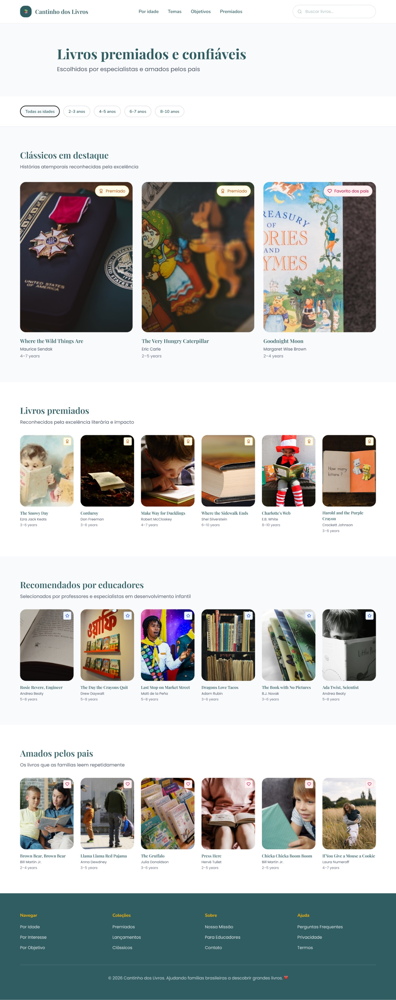
First version · Premiados · Figma Make
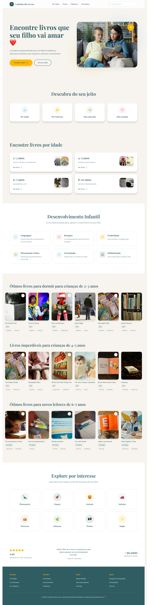
First version · Home · Figma Make
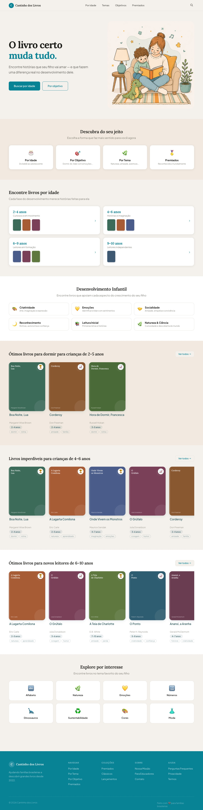
Later version · Home · Claude Design
03 / Product and ux
Designing around parents' needs
The first navigation had age, themes, objectives and award-winning books. To reduce scope and improve clarity, it became three discovery paths.
01
By age
Curated collections for different age groups.
02
Interests
Animals, nature, feelings and emotions.
03
Moments
Potty training, bedtime, learning letters and numbers.
Decision: four paths to three
Themes and objectives overlapped, and award lists served a different intent. Merging them into interests and moments cut scope and made each path answer one parent question.
Decision: keep parents moving
Guided reviews, breadcrumbs and related-book links let parents continue from one relevant book to the next.
Navigation, before and after
Before · Cantinho dos Livros: age, themes, objectives, award winners
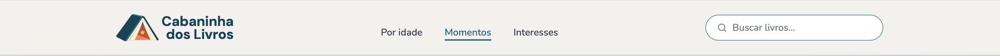
After · Cabaninha dos Livros desktop: age, moments, interests
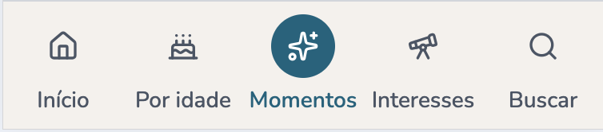
After · Mobile bottom bar
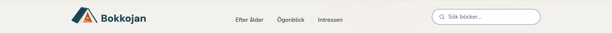
After · Bokkojan desktop: age, moments, interests
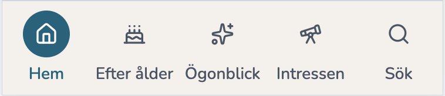
After · Bokkojan mobile bottom bar
These decisions are hypotheses, not validated research. They draw on my own experience as a parent and on exploratory desk research with ChatGPT into which topics parents search for in Brazil and Sweden. The next step is to test them against real search data and parent feedback.
From browsing to choosing
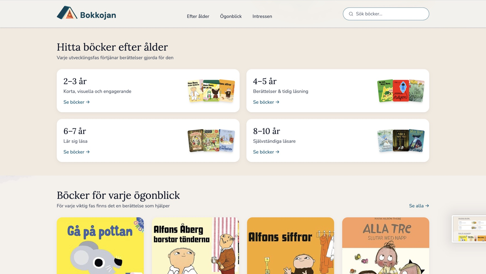
A / Homepage
Entry to discovery
The homepage introduces the discovery paths and shows sample content from each, so parents quickly understand what they can find on the site.
B / Book detail page
Context for choosing
Each guided review answers three questions:
— Who is the book for?
— How can we read it together?
— What should I know before choosing it?
These questions also support content quality and E-E-A-T (experience, expertise, authoritativeness and trustworthiness) as part of the SEO strategy.
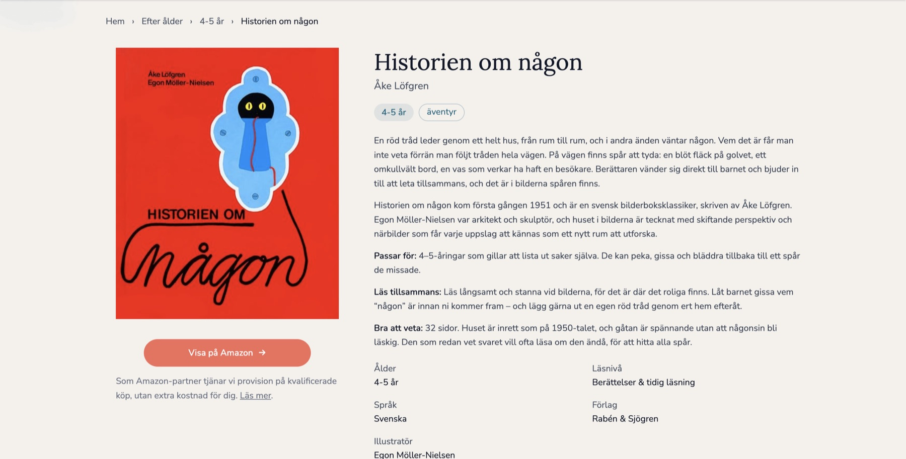
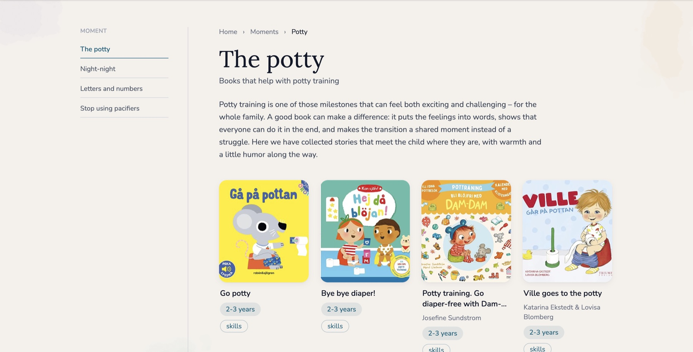
C / Moments page
Parenting situations to books
Connects everyday situations with relevant recommendations.
Each page opens with a supportive introduction and tips for parents before the book selection.
04 / Two markets
Two markets, one concept
The Brazilian product was renamed Cabaninha dos Livros to create a more distinctive brand. The Swedish name, Bokkojan, evokes a cozy play tent where children play and read.
I chose markets I know from the inside. I'm originally from Brazil and have lived in Sweden for more than ten years, so I can write in both languages, understand how parents in each country choose books, and judge the local retailers.
Brazil · Portuguese
Cabaninha dos Livros
Sweden · Swedish
Bokkojan
Kept Discovery model: age, interests, moments
Adapted Brand name and identity
Adapted Language
Adapted Book content and retailers
Logo creation
Pencil sketches explored the idea of an open book as a tent. The chosen direction became a small identity system with variations, a palette and typography.
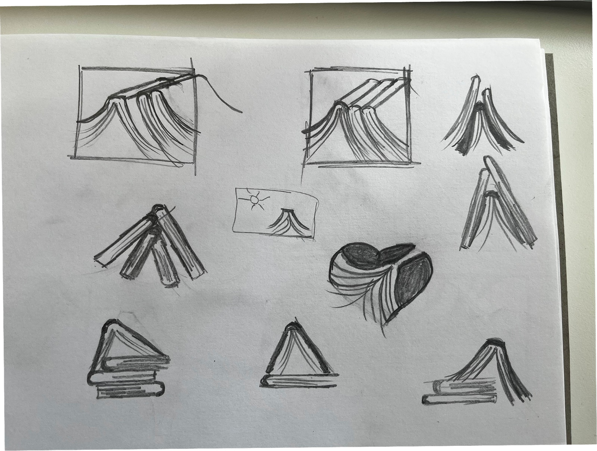
Sketches · Book as tent
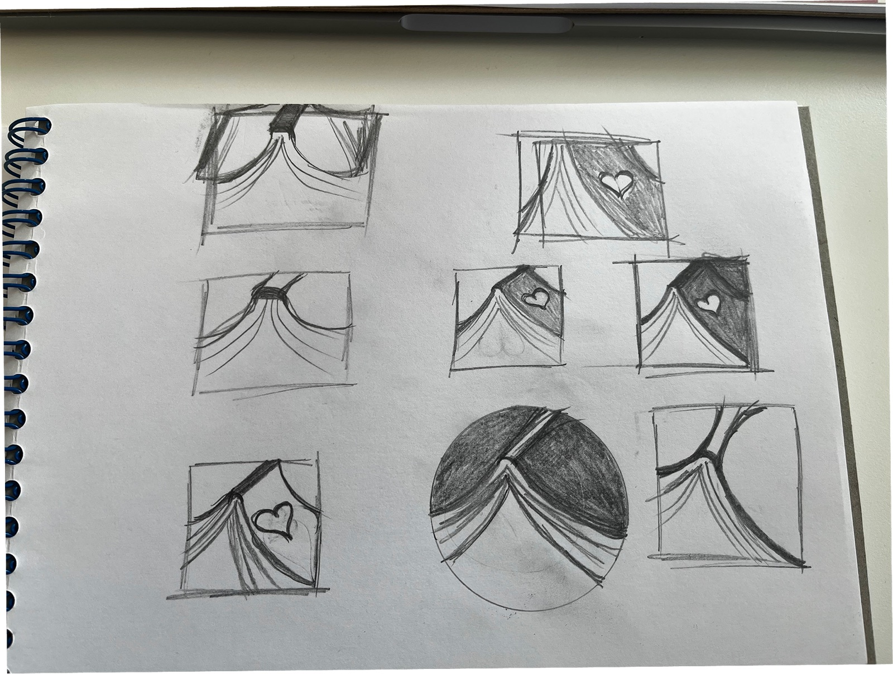
Sketches · Framed marks
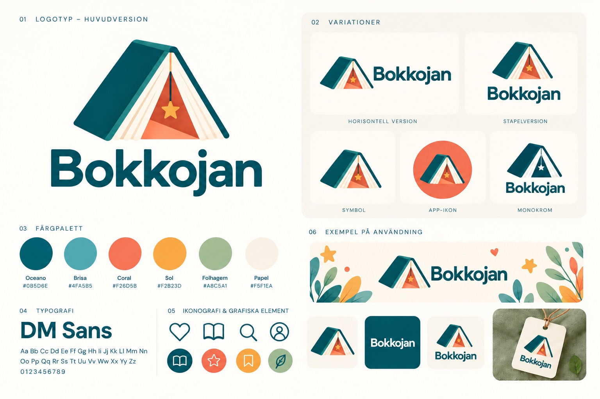
Final identity · Logo, variations, palette, type and usage
05 / Building with ai
A designer shipping production code
My husband set up the first version of the Astro project. From there I continued on my own: Claude Code implemented the site against the structures and requirements I defined, and I learned to run the rest of the stack, from registering domains to Cloudflare, GitHub and Google Search Console.
Architecture
Markdown books, collections
→
Astro templates book page, collection
→
Static site SEO, structured data
→
Affiliate links relevant retailers
My decisions
Product direction, market focus, information architecture, visual identity, page structures, naming, content standards and SEO approach.
AI-assisted
Claude Code supported implementation of the Astro site against the structures and requirements I defined.
Standards as Skills
I wrote my standards into Claude Code Skills: reusable instructions that Claude applies every time it builds or edits a page. That kept quality consistent across pages and both languages without repeating requirements in every prompt.
AccessibilitySEO strategyBrand and language toneData structure
Delegated to AI
Front-end development and responsiveness, templates and components, structured data, tests and refactors. On the content side: managing tags and linking related content.
Kept for myself
Visual identity, illustrations and content research. Reviewing every layout, pattern and responsive behavior, and deciding when something should become a reusable component or template.
Where it struggled
Without regular reviews and clear rules, AI produces disconnected content. While adding books to the catalog, Claude Code invented new tags that linked to nothing. When I caught it, I had the tags removed and added a Skill requiring every tag to link to a specific page.
How the work changed
Research, ideation and prototyping are much faster, and development became far quicker and simpler than before AI. But AI generates a lot of material, so cleaning it up takes real time, and testing, feedback and iteration take as long as ever. What matters more now is how clearly I communicate my decisions. I work with Claude Code like a team colleague: I bring instructions or ideas, ask for its opinion and suggestions, then decide. Cantinho dos Livros took about three months at 20 hours a week; with the setup and Skills in place, Bokkojan and the Cabaninha rebrand took about one month.
06 / Growth
SEO and affiliate model
The business model is simple: useful content brings parents in through search, and affiliate links to retailers earn a commission when they buy a recommended book.
SEO
Content built for search intent
I choose topics around children's milestones, the phases every child goes through, such as potty training, bedtime, learning letters or understanding feelings. Parents search for help at each of these, so each milestone becomes a Moments or Interests page. Book reviews follow a consistent structure that supports E-E-A-T, and the static build ships structured data.
Published so far: 100 pages on Cabaninha dos Livros and 70 on Bokkojan.
Affiliate
Partnerships per market
Affiliate links fund the site and help parents get the book they've chosen. They stay secondary to discovery, because the first goal is helping parents find the right book quickly. Amazon was the first partner in both markets, with the easiest onboarding. In Brazil I recently added Mercado Livre, a stronger local brand with more traditional bookstores on its platform. In Sweden I'm working with Tradedoubler to find local partners. The retailer buttons first sat below the book description, which I suspected was hurting clicks. I moved them up. User feedback has been positive, but clicks haven't clearly increased on either site yet. It's too early to call.
07 / Results so far
What happened
Cabaninha dos Livros · Brazil · Average position 12.8 · 0 orders
45
Indexed pages
Search Console, of 100 published
106
Impressions
Search Console
3
Clicks
Search Console
30
→ 0 ordersAffiliate clicks
17 Amazon, 13 Mercado Livre
R$0
Revenue
Affiliate dashboards
Bokkojan · Sweden · Average position 26.5 · 1 order
14
Indexed pages
Search Console, of 70 published
76
Impressions
Search Console
1
Clicks
Search Console
9
→ 1 orderAffiliate clicks
Amazon, 11% conversion
kr 0
Revenue
kr 55.88 pending: 5% of a kr 1,117.60 order, not yet shipped
Google Search Console data: 30 Sep – 1 Nov 2026. Affiliate dashboards: 3 Oct – 1 Nov 2026. Most affiliate clicks came from visits outside Google Search. Web Analytics will show where these visitors come from in the next 2–4 weeks.
Delivered
Success criteria met: responsive sites launched solo in a short time, with quality content, accessibility, SEO and affiliate links.
— Two localized discovery websites
— Model: age, interests, moments
— Reusable content structures and book pages
— Initial affiliate monetization model
— Technical SEO foundation
Still to validate
— Organic traffic
— Affiliate performance
— Parent feedback
— Whether the three paths match how parents search
08 / Learnings
What I learned and what's next
Product and business
Building a business myself taught me things no course or article could, and it changed how I see product work: I now think about cost and distribution from day one, not just the user experience. Working on a problem I live with as a parent kept me motivated and made the work fun.
Affiliate partnerships
Affiliate programs value their partners, and the stores were helpful and supportive. The surprise was conversion: in Brazil, 30 clicks have brought no orders yet, and Sweden has its first order from 9 clicks.
AI-assisted development
Setting up guidelines, rules and Skills at the start is what keeps the project in scope and the content consistent. It also helps to ask the AI regularly during development to review the Skills and add new ones.
Web marketing and SEO
SEO is the first step of the marketing strategy. From monitoring both sites, I learned that organic growth takes time to gain traction: after a month, Google had indexed 45 of 100 pages in Brazil and 14 of 70 in Sweden. Next, I plan to use Pinterest and Instagram to build brand awareness.
Key takeaway
I set out to learn how a product business works end to end, and launched one product in two markets to find out.
Bokkojan · Cabaninha dos Livros
My next bet is offering more retailers per book, so parents can buy where they already shop, and measuring whether that raises the share of clicks that become orders.
This experiment showed me that one person, working part-time, can now take a product from idea to live business in more than one country. Neither site is profitable yet, but the skills I gained used to feel out of reach, and the same setup can be applied to other ideas waiting on my list.